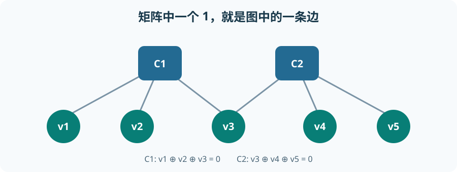

从零理解 LDPC：校验图、软信息与迭代译码¶
低密度奇偶校验码（Low-Density Parity-Check，LDPC）用大量简单的“若干比特 XOR 后必须为 0”约束保护信息。低密度描述校验矩阵中大多数位置是 0，而不是码字里 1 很少。发送端产生满足全部约束的码字；接收端利用带噪观测反复交换“这个比特更像 0 还是 1”的消息，尽量恢复合法码字。本章从两条小约束开始，到能够追踪 DVB-S2 解码器中的数组、调度和定点运算。
信息位 → LDPC 编码 → 合法码字 → 信道/解映射器 → 每位的信道 LLR
↓
校验矩阵 H → Tanner 图 → VN/CN 消息迭代 → 硬判决 → syndrome 检查
↓
输出或报告失败
1. 先让两个奇偶校验工作起来¶
比特只有 0、1。异或（XOR，记 \(\oplus\)）满足 \(1\oplus1=0\)、\(1\oplus0=1\)；它就是“相加后对 2 取余”。一个偶校验条件 a XOR b XOR c = 0 表示其中 1 的数目为偶数。若接收 0,1,1，条件成立；若接收 0,1,0，条件不成立，但仅凭一条条件还不知道是哪一位错。
设五个比特 \(v_1,\ldots,v_5\) 满足两条约束：
第一条检查前三位，第二条检查后三位，它们在 \(v_3\) 相接。01101 是合法码字：\(0\oplus1\oplus1=0\)，\(1\oplus0\oplus1=0\)。00101 第一条不通过，第二条通过。syndrome 是各条校验的结果列表；这里 00101 的 syndrome 为 (1,0)。syndrome 非零表示违反约束；全零只表示“目前是某个合法码字”，不保证它就是原本发送的那一个。
1.1 矩阵不是新的算法，只是把约束排成表¶
矩阵是按行列排列的数表。将每条校验写成一行、每个比特位置写成一列；参与这条约束就填 1，否则填 0：
把码字作为列向量 \(c=(v_1,v_2,v_3,v_4,v_5)^{\mathsf T}\)，上标 \(\mathsf T\) 表示把一行竖起来。矩阵乘列向量的每个输出位置，是对应行逐项相乘后再 XOR；这里全部计算都在只有 0、1 的 GF(2) 中进行。所以合法码字条件简写为 \(Hc=0\)。若把码字约定成行向量，同一件事写为 \(Hc^{\mathsf T}=0\)；不能在代码中混用两个约定。
这个 \(2\times5\) 的教学矩阵只有两个独立约束，可自由选择 3 位，再由约束求剩下 2 位，所以它是一个 \((n=5,k=3)\) 线性分组码，码率 \(k/n=3/5\)。真实 LDPC 的 \(H\) 往往包含上万列，但每行、每列通常只有少量非零元素；维度大和稀疏可以同时成立。编码不是“把 \(H\) 直接乘输入位”这么简单：编码器要解出能让 \(Hc=0\) 的校验位，可利用专门结构、消元或累加器。
这个例子可以把“解出校验位”真正做一遍。取三个自由信息位 \(u=(a,b,d)=(v_1,v_2,v_4)\)；由第一条约束得 \(v_3=a\oplus b\)，再由第二条得 \(v_5=a\oplus b\oplus d\)。所以编码结果为
例如 \(u=(0,1,0)\) 时，按 GF(2) 选择 \(G\) 的第二行，得到前文的合法码字 \(c=01101\)。逐行检查可得 \(GH^{\mathsf T}=0\)：\(G\) 的每一行本身都是合法码字，因此它们的任意 XOR 组合也满足 \(Hc^{\mathsf T}=0\)。这里 \(G\) 是生成矩阵，负责把信息位变为码字；\(H\) 负责定义哪些码字合法。同一个码可以换一组信息位基底、改用不同的生成矩阵，也可以换等价的独立校验行；不是“一张 \(H\) 唯一对应一张写法固定的 \(G\)”。
2. Tanner 图：把矩阵变成可交换消息的网络¶
为每个码字位画一个变量节点（Variable Node，VN），为每条奇偶约束画一个校验节点（Check Node，CN）。若 \(H\) 的第 \(a\) 行、第 \(i\) 列为 1，就在 CN \(a\) 与 VN \(i\) 之间连一条边。上面的矩阵对应：
v1 ─┐
v2 ─┼─ C1 ─ v3 ─ C2 ─┬─ v4
│ └─ v5
└─ C1 连接 v1,v2,v3；C2 连接 v3,v4,v5
更准确地说图是二部图：VN 之间不直接连边，CN 之间也不直接连边。上图只是在一行内压缩画法；边的清单才是严格定义。一个 VN 连接几个 CN，称变量节点度数；一个 CN 检查几个 VN，称校验节点度数。本例 \(v_3\) 的度数为 2，其余 VN 为 1；两条 CN 的度数均为 3。真实 LDPC 图有许多环（从一个节点经边绕一圈返回原点）；环会让消息在多轮后重复使用曾经的证据，因此实际迭代译码是近似推断，而非“每轮都得到严格独立的新概率”。

如果每个 VN 都连同样多的 CN，且每个 CN 都连同样多的 VN，称为规则（regular）LDPC 图；否则称为非规则（irregular）图。用 \(d_v\) 表示每列的 1 的个数（VN 度数），\(d_c\) 表示每行的 1 的个数（CN 度数），规则图常记为 \((d_v,d_c)\)。本例 \(v_3\) 连 2 条边，其余 VN 只连 1 条，故是非规则的教学图。若规则矩阵有 \(n\) 列、\(m\) 行，数同一批边有两种方法：按列得到 \(nd_v\)，按行得到 \(md_c\)，所以必有 \(nd_v=md_c\)。这只是连接数关系，不保证每行校验都独立，也不直接给出实际纠错性能；非规则图也不是在所有长度、信道和译码器下都更好。
2.1 图怎样用于硬判决比特翻转¶
上面的树形小图适合看消息方向，但多个 VN 只有一条边，不适合演示靠“失败校验的票数”定位错误。另取一个独立于前述 \((5,3)\) 例子的六位教学码，三条校验写为
发送码字 \(c=110011\) 满足三行约束。现在只让第 1 位翻转，收到 \(r=010011\)。先用 GF(2) 求 syndrome：\(s=H_{\rm BF}r^{\mathsf T}=(1,0,1)^{\mathsf T}\)，表示第 1、3 条校验失败。接着对每一位统计它参与了多少条失败校验：\(f_i=\sum_a s_a(H_{\rm BF})_{a,i}\)。这里 \(\sum\) 用普通整数加法计票，而不是 XOR；算得
| 接收位位置 \(i\) | 1 | 2 | 3 | 4 | 5 | 6 |
|---|---|---|---|---|---|---|
| 失败校验票数 \(f_i\) | 2 | 1 | 1 | 1 | 0 | 1 |
若此教学规则设阈值为 2，就翻转唯一得到两票的第 1 位，重新计算 syndrome 为零，恢复 \(110011\)。这就是硬判决 bit-flipping：输入只保留 0/1，利用不满足的校验对可疑位置投票，再迭代检查；与前文使用连续 LLR 的 SPA/Min-Sum 不同。实际规则可按阈值、最大票数或加权票数选择，也必须规定平票、并行翻转和最大迭代次数，不能把“翻转票数最高的位”当作普遍正确的译码定理。
再让原码字的第 1、2 位同时翻转，接收 \(000011\)。此时 \(s=(0,1,1)^{\mathsf T}\)，票数为 \((1,1,2,0,1,1)\)。同一阈值规则会错翻第 3 位，得到 \(001011\)；它的 syndrome 也为零，却不是原本发送的 \(110011\)。这个 \(H_{\rm BF}\) 的列均非零且两两不同，因此没有重量为 1 或 2 的非零合法码字；而这两个合法码字相差 3 位，故最小距离恰为 3，只保证纠正一位错误。两位信道错误已超出保证范围。这一步解释了为什么“syndrome 归零”只能证明找到某个合法码字，不能证明信息恢复正确，也说明软信息中的可靠程度为何有价值。
3. 在公式之前：概率、观测与 LLR¶
假设信道对某个比特给出观测 \(y\)，例如星座点的 I/Q 采样。\(P(v=0\mid y)\) 表示已看到 \(y\) 后该位为 0 的概率，\(P(v=1\mid y)\) 同理，两者相加为 1。赔率是前者除以后者；若两者为 0.8 与 0.2，则赔率 4:1。自然对数 \(\ln\) 是指数函数 \(e^x\) 的反函数：\(\ln e^x=x\)；它把连乘变成相加，\(\ln(ab)=\ln a+\ln b\)。
本文始终采用“正数支持 0”的对数似然比（Log-Likelihood Ratio，LLR）约定：
它是无量纲的对数赔率，不是概率：正值偏向 0，负值偏向 1，零表示两者持平。例如 \(L=\ln4\approx1.386\) 对应 4:1，而不是“概率 1.386”。有的源码把正号定义为支持 1，接口必须确认。信道 LLR \(L_i^{\rm ch}\) 是解映射器或接收前端对位 \(v_i\) 的初始证据，尚未利用 \(H\) 的约束，亦称 intrinsic information（固有信息）。译码中从其他约束新获得的证据叫 extrinsic information（外信息）。
后续公式假设在给定真实比特时，各相关观测按所用图模型足够独立，且观测的概率校准正确。若先验比特不等概率，信道 LLR 应包含或单独加入先验项，不能悄悄把“后验 LLR”和“纯信道似然比”当同一个量。图中有环时，这些独立性只是局部计算采用的近似。
3.1 为什么送给邻居的消息要排除它自己¶
设 \(q_{i\to a}\) 是 VN \(i\) 发给 CN \(a\) 的 LLR，\(r_{a\to i}\) 是 CN \(a\) 发回 VN \(i\) 的 LLR。若发给 \(a\) 的消息里又含有从 \(a\) 收到的上轮消息，就会把同一证据立即反弹回来、重复计算。外信息原则就是：向某条边发送时，先排除来自该边的消息。
用 \(N(i)\) 表示与 VN \(i\) 相连的 CN 集合，\(N(a)\) 表示与 CN \(a\) 相连的 VN 集合。集合去掉元素 \(a\) 写作 \(N(i)\setminus\{a\}\)。当独立证据的赔率相乘时，对数赔率相加，于是 VN 更新为
\(\sum\) 是把列出的数相加。对全部邻居都收到后，VN 的后验近似 LLR为
app 指 a posteriori（后验）；这个数的符号给硬判决。区别是 \(q_{i\to a}\) 不含目标 CN \(a\) 的贡献，\(L_i^{\rm app}\) 含全部贡献。一个 VN 若只连一个 CN，则送给该 CN 的消息永远只是信道 LLR；这不是程序漏掉迭代，而是图结构如此。
4. Sum-Product：校验节点怎样组合概率¶
4.1 先用两个邻居推导“奇偶概率”¶
CN 发消息给 VN \(i\) 时，假设它排除 \(i\)，其余邻居发来的概率是临时独立的。CN 要判断其余比特 XOR 为 0 还是 1；因为全体 XOR 必须为 0，前者支持 \(v_i=0\)，后者支持 \(v_i=1\)。
若两个邻居分别有概率 \((p_0,p_1)\)、\((q_0,q_1)\)，它们 XOR 为 0 的概率是 \(p_0q_0+p_1q_1\)，为 1 的概率是 \(p_0q_1+p_1q_0\)；前者减后者可因式分解为 \((p_0-p_1)(q_0-q_1)\)。这里 \(p_0+p_1=q_0+q_1=1\)。继续加入更多邻居，相同“差值”就逐个相乘。
要用 LLR 写出这个差值，定义双曲正切 \(\tanh z=(e^z-e^{-z})/(e^z+e^{-z})\)。将 \(L=\ln(p_0/p_1)\) 代入并用 \(p_0+p_1=1\) 化简，可得
将所有非目标邻居的差值相乘，再把结果变回对数赔率，得到精确的校验节点 Sum-Product（SPA，和积算法）更新：
\(\prod\) 是连乘，\(\operatorname{atanh}\) 是 \(\tanh\) 的反函数；若输入差值 \(D=P_0-P_1\)，则输出 LLR 为 \(\ln((1+D)/(1-D))=2\operatorname{atanh}D\)。式左侧是 CN 给一条边的软证据 LLR，不是概率本身。符号由其他输入负号的奇偶性决定：其他邻居中偏向 1 的个数若为奇数，则 CN 倾向让目标位为 1。数值实现不能让 \(|D|\) 误达到 1 后直接取无穷大的 atanh；需稳定变换或裁剪。
在无环树图且输入独立时，沿边传递的概率分解可以是精确的；有环 LDPC 图反复迭代时，通常称 belief propagation（BP，置信传播），它是有效但非普遍精确的近似算法。不能由 \(Hc=0\) 单独推导“循环 BP 总能找到原码字”。
4.2 为什么 Min-Sum 看起来像“符号乘积 × 最小幅值”¶
把上式分成符号和幅值。对实数 LLR，\(\tanh\) 保留符号，所以 CN 输出符号是其他输入符号的乘积；我们把 sign(0) 的处理留给具体实现约定。幅值来自多个 \(|\tanh(q/2)|<1\) 的乘积，乘积不会大于其中最小的因子。反变换以后，输出幅值通常小于或等于输入幅值最小值。
当输入幅值较大时，SPA 的非线性表达式可以用Min-Sum（最小和）近似：
\(\min\) 选最小值。Min-Sum 不用对每条边求 tanh/atanh，而用 XOR 符号、最小值与次小值，计算和硬件实现较轻；但它往往高估 CN 输出幅值，导致消息过于自信。CN 只有两个邻居时，排除目标后只剩一个输入，SPA 与 Min-Sum 相同；近似误差在多个竞争输入时才显现。
Normalized Min-Sum（NMS）把该幅值乘 \(0<\alpha\le1\)：\(r^{\rm NMS}=\alpha r^{\rm MS}\)。Offset Min-Sum（OMS）把它减去非负偏置 \(\beta\)，并截为非负：
\(\max\) 取较大值。前者按比例缩小大、小消息；后者对小消息压得更明显。这些是经验近似补偿，不是由精确概率推导出一个对所有码、信道、量化位宽都通用的 \(\alpha\) 或 \(\beta\)。需要按目标 BER/FER、迭代次数和实现位宽测量选择；同时应用两者也必须说明具体算法。AMD 的 Soft-Decision FEC IP 文档正说明归一化系数与输入饱和/缩放都要针对系统调优。
5. 把两轮消息传递全部算出来¶
用第 1 节的 \(H\)，选择信道 LLR
本例使用 flooding Min-Sum，即一轮中全部 CN 先用“上一轮 VN 消息”同步更新，再由全部 VN 用新的 CN 消息更新。负值偏向 1，所以初始硬判决为 00101，\(C_1\) 不满足；这些数字是教学设定，不代表某个实际调制器的测量值。
初始化所有边的 \(r_{a\to i}=0\)，所以第一轮每条 \(q_{i\to a}=L_i^{\rm ch}\)。CN 逐边排除目标后的计算如下：
| 第 1 轮 CN | 发给目标 VN | 使用的其他输入 | 符号与最小幅值 | 输出 \(r\) |
|---|---|---|---|---|
| \(C_1\) | \(v_1\) | \(1,-0.4\) | 负，\(\min(1,0.4)=0.4\) | \(-0.4\) |
| \(C_1\) | \(v_2\) | \(2,-0.4\) | 负，\(0.4\) | \(-0.4\) |
| \(C_1\) | \(v_3\) | \(2,1\) | 正，\(1\) | \(+1\) |
| \(C_2\) | \(v_3\) | \(1.5,-2\) | 负，\(1.5\) | \(-1.5\) |
| \(C_2\) | \(v_4\) | \(-0.4,-2\) | 正，\(0.4\) | \(+0.4\) |
| \(C_2\) | \(v_5\) | \(-0.4,1.5\) | 负，\(0.4\) | \(-0.4\) |
加回信道证据，第一轮 \(L^{\rm app}=(1.6,0.6,-0.9,1.9,-2.4)\)；硬判决仍为 00101，\(C_1\) 仍失败，故继续。第二轮 VN 发给每条边时须先减去该边旧 CN 消息，例如 \(v_3\to C_1=-0.4+(-1.5)=-1.9\)，\(v_3\to C_2=-0.4+1=+0.6\)。其他 VN 度数为 1，发出的还是自身信道 LLR。
| 第 2 轮 CN | 输入 \(q\)（按本 CN 邻居顺序） | 输出 \(r\)（同顺序） |
|---|---|---|
| \(C_1\)：\(v_1,v_2,v_3\) | \((2,1,-1.9)\) | \((-1,-1.9,+1)\) |
| \(C_2\)：\(v_3,v_4,v_5\) | \((+0.6,1.5,-2)\) | \((-1.5,-0.6,+0.6)\) |
第二轮 \(L^{\rm app}=(1,-0.9,-0.9,0.9,-1.4)\)，硬判决为 01101。现在 \(C_1:0\oplus1\oplus1=0\)，\(C_2:1\oplus0\oplus1=0\)，syndrome 为零，可以提前停止。这是 Min-Sum 的玩具轨迹，不是 SPA 的相同数值，也不意味着真实发送的一定就是 01101。这张小图是一棵树，能清楚展示外信息；真实 LDPC 图通常有环、多得多的边以及校验交织。
6. 调度、停止和失败¶
flooding 调度把一轮 CN 消息全部算完再统一更新 VN；同一轮各层可以高度并行，但通常需要读写完整边消息。layered（分层）调度按一组组互不冲突或可控冲突的校验行处理：更新一层后立即写回变量的当前总 LLR，下一层能马上使用较新的证据，因此常在较少的“整图等效迭代”内收敛，但内存读写冲突和层间依赖更复杂。
实现 layered Min-Sum 时，常保存每个变量的当前 \(L_i\) 和每条边的旧 \(r_{a\to i}^{\rm old}\)；处理一层时先做 \(q_{i\to a}=L_i-r_{a\to i}^{\rm old}\)（此处是普通实数减法，不是 GF(2) XOR），由这些 \(q\) 计算新 \(r\)，再令 \(L_i=q_{i\to a}+r_{a\to i}^{\rm new}\)。这就是“先移除旧贡献，再放入新贡献”；若漏掉移除，会在每轮反复累计同一条校验的信息。
停止条件通常包括：硬判决满足所有校验，即 \(H\hat c^{\mathsf T}=0\)；达到最大迭代次数；或某些实现附加稳定性/CRC 检查。前者是合法性检验，不是“真实发送码字已被证明恢复”。真实系统要报告平均与最坏迭代次数、误帧率、未检测错误风险。若迭代未收敛，应有明确失败状态和后续处理，不能把最后一轮硬判决默认为成功。
7. 量化、定点、饱和与内存结构¶
浮点 LLR 便于建立基准，但高吞吐硬件常用定点。若用比例因子 \(S\) 存整数 \(Q=\operatorname{round}(SL)\)，例如 \(S=4\) 时 LLR \(1.5\) 存为 6，恢复约为 \(6/4=1.5\)；\(1.3\) 存 5，恢复 1.25，误差来自量化。截断直接舍弃小数，四舍五入取最近可表示值；两者的偏差与误码性能可能不同。位宽决定可表示范围，超出范围时应饱和到最大/最小值，而不是意外回绕到反号；例如有符号 6 位整数范围是 \(-32\) 到 \(31\)，若把比例系数计入，LLR 范围也随之变化。
饱和太早会抹掉强证据的差别；范围太大却只用很少位，会降低零附近分辨率。量化位置还包括输入 LLR、边消息、累加的 \(L^{\rm app}\)、NMS 系数与减法中间值。特别注意 \(L^{\rm app}\) 是实数/定点加减，而 \(H\hat c^{\mathsf T}\) 是二进制 XOR；这两个阶段不能共用同一套“加法”语义。负数最小值的绝对值在二补码中可能溢出，求 CN 最小值前应扩展位宽或采用安全处理。
对源码与 AIE/PL 映射，要辨认至少三类数据：
| 数据 | 典型规模 | 访问特点 |
|---|---|---|
| 信道/当前变量 LLR | 每码字位一项 | VN 更新、硬判决与检查时反复访问 |
| 边上的 CN 消息 | 每个 \(H\) 的非零元素一项 | 迭代读写；layered 需读旧值再覆盖 |
| 图的邻接/位移信息 | 静态结构 | 指示哪些变量属于某校验、循环位移和块边界 |
若 \(H\) 有 \(E\) 个非零元素，一轮消息更新的工作量通常随 \(E\) 增长，而不是随稠密矩阵的“行数 × 列数”增长。硬件瓶颈可能是 LLR 算术，也可能是按图边访问变量数组造成的带宽、bank 冲突或数据搬运。CN 可用符号 XOR、最小值、次小值及最小值位置，以近似每行度数线性的工作量产生全部边输出：排除某边后，若该边恰为最小项，就用次小值，否则用最小值。对度数很大的 CN，给每条边重新扫描其他全部输入会浪费计算。
8. 与 DVB-S2 LDPC 结构的关系¶
ETSI EN 302 307-1 第 5.3 节规定 BCH 外码在前、LDPC 内码在后；正常 FECFRAME 的 LDPC 输出长 \(64800\) 位，短 FECFRAME 输出长 \(16200\) 位，输入长度随 MODCOD 变化。以正常帧 3/5 为例，BCH 输出 \(38880\) 位成为 LDPC 输入，LDPC 输出 \(64800\) 位，新增 \(25920\) 位校验。3/5 是此 LDPC 层的 \(38880/64800\)，不包括 BBHEADER、BCH 或物理层开销。
标准给出校验位累加地址表及与码率相关的 \(q\)，利用规律性的位移与累加操作高效生成校验位，而不是要求发送机保存一张巨大的稠密 \(H\)。标准第 5.3.2 节及附录 B/C是还原真实图结构的准绳。可把它理解为由稀疏连接与有规律的移位组成的大码，但不能仅凭玩具矩阵或简单规则重复 360 次就声称等于 DVB-S2；码率、帧型、表项与位顺序都必须逐项对照标准。
接收链里 Demapper 的软输出先按调制交织的逆映射放回 FECFRAME 编码位顺序，再喂给 LDPC。LDPC 输出经 BCH 处理。若把交织后的位顺序直接当作 \(H\) 的列顺序，数学算法没错也会永远不收敛。对于将来 AIE 并行化，先把一个 frame 的边表、消息精度、层间数据依赖、平均迭代数和吞吐目标测清，再决定按 CN、行组或帧分割；仅把多个 VN 函数“并行运行”未必能绕开共享变量的存储冲突。
9. 常见误区与代码阅读路径¶
| 误区 | 更准确的理解 |
|---|---|
| “LDPC 的低密度表示码字中 1 少。” | 稀疏的是校验矩阵 \(H\) 的非零连接。 |
| “CN 消息就是整行校验的硬结果。” | 它是针对一条目标边、排除该边输入后的软 LLR。 |
| “SPA 就是把所有输入 LLR 相加。” | VN 是相加，CN 来自偶校验概率组合，采用 tanh/atanh 关系。 |
| “Min-Sum 与 SPA 数值相同。” | 它以最小幅值近似非线性组合，通常会过度自信。 |
| “归一化/偏置有统一最佳值。” | 最佳参数受码、信道、量化和迭代预算影响。 |
| “syndrome 为零证明译码正确。” | 只能证明输出满足 \(H\)，仍可能是另一个合法码字。 |
| “layered 的一次更新等于 flooding 的一次更新。” | 两者信息新旧程度不同，迭代数不能机械比较。 |
| “AIE 向量化后吞吐必然线性增加。” | 边消息流量、bank 冲突、调度依赖和停止逻辑都可能先成为瓶颈。 |
读解码器源码时，依次找：LLR 符号约定 → 输入位顺序 → 图结构/地址表 → 初始化 → CN 更新 → VN 或 layered 回写 → 量化饱和 → 硬判决 → syndrome → 迭代/失败出口。对每一处数组索引，问它是“码字位索引”“校验行索引”“边索引”还是“循环位移”；这些通常比公式本身更容易导致实际错误。
权威原始资料¶
- MIT OpenCourseWare，Principles of Digital Communication II，Chapter 12：图上的和积/最小和算法及循环图上的消息传递。
- ETSI EN 302 307-1 V1.4.1，第 5.3 节与附录 B/C：DVB-S2 LDPC 帧长、编码流程与地址表。
- AMD Soft-Decision FEC Integrated Block，Normalization：归一化最小和及输入 LLR 饱和/缩放的实现考虑；是参考实现，不表示 DVB-S2 必须采用该系数。